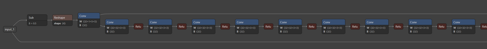
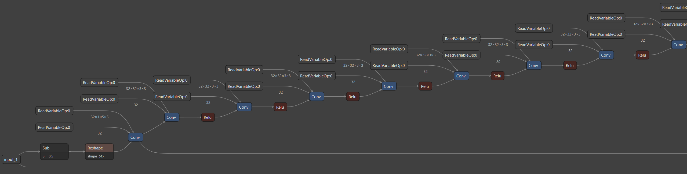

Tutorial #4: Converting and executing a model with dynamic weights¶
This tutorial will show the steps needed to take the publicly available SESR-XL super resolution model and modify it so that different sets of weights can be used with the model dynamically during execution. The tutorial will use an Onnx version of SESR-XL as an example. The code snippets below will be specific to this model and will need to be modified to fit other use cases.
For further information on the QNN converter and qnn-net-run tools used in this tutorial see: Tools and qnn-net-run pages.
This tutorial assumes general setup instructions have been followed at Setup.
A full script containing all the steps in this tutorial can be found at ${QNN_SDK_ROOT}/examples/Models/SESR/full_script.sh
The sections of the tutorial are as follows:
Setup¶
SESR is publicly available at https://github.com/ARM-software/sesr. For this tutorial, the tensorflow model will first be converted to an Onnx model. Clone the SESR repository and setup a python enviroment:
apt-get install python3-venv
python3 -m venv pyenv
source pyenv/bin/activate
python -m pip install -U pip
pip install tensorflow
pip install tensorflow_datasets==4.1
pip install tf2onnx
pip install packaging
git clone https://github.com/ARM-software/sesr
cd sesr/
git apply ${QNN_SDK_ROOT}/examples/Models/SESR/sesr.patch
export PYTHONPATH=$PWD:$PYTHONPATH
cd ..
Note
For a better demonstration, the original tensorflow model is altered to use Relu activations and to include biases for the convolutions. A git patch with these changes can be found in ${QNN_SDK_ROOT}/examples/Models/SESR/sesr.patch
The following script can be executed to generate the configuration for a x2 super resolution SESR-XL used in this tutorial and convert it into a onnx model:
import tensorflow as tf
from models import sesr, model_utils
import utils
import tf2onnx
FLAGS = tf.compat.v1.flags.FLAGS
FLAGS.__delattr__('int_features')
tf.compat.v1.flags.DEFINE_string('model_name', 'SESR', 'Name of the model')
tf.compat.v1.flags.DEFINE_bool('quant_W', False, 'Quantize weights')
tf.compat.v1.flags.DEFINE_bool('quant_A', False, 'Quantize activations')
tf.compat.v1.flags.DEFINE_bool('gen_tflite', True, 'Generate TFLITE')
tf.compat.v1.flags.DEFINE_integer('tflite_height', 512, 'Height of LR image in TFLITE')
tf.compat.v1.flags.DEFINE_integer('tflite_width', 512, 'Width of LR image in TFLITE')
tf.compat.v1.flags.DEFINE_integer('int_features', 32, 'Number of intermediate features within SESR (parameter f in paper)')
model = sesr.SESR(
m=11,
feature_size=64,
LinearBlock_fn=model_utils.LinearBlock_c,
quant_W=FLAGS.quant_W,
quant_A=FLAGS.quant_A,
gen_tflite=FLAGS.gen_tflite,
mode='infer')
model.compile()
input_image = tf.random.uniform([1, FLAGS.tflite_height, FLAGS.tflite_width, 1])
temp = model(input_image)
tf2onnx.convert.from_keras(model, output_path="original_model.onnx")
Modifying the Framework Model¶
The original model has a single input of 1x512x512x1 and a single output of 1x1024x1024x1.
The framework model will be modified by removing the static weights and biases from the graph and
substituting them with additional inputs to the graph. SESR-XL has 26 sets of weights and biases. The
modified graph will have a total of 27 inputs.
Python script to modify the Onnx framework model as described:
import onnx
from onnx import helper, numpy_helper
from onnx import AttributeProto, TensorProto, GraphProto
onnx_model = onnx.load('original_model.onnx')
nodes = onnx_model.graph.node
inputs = onnx_model.graph.input
weights = onnx_model.graph.initializer
for i,node in enumerate(nodes):
if node.op_type == "Conv":
weight_name = node.input[1]
bias_name = node.input[2]
new_weight_name = weight_name + "_as_input"
new_bias_name = bias_name + "_as_input"
[weights_tensor] = [w for w in weights if w.name == weight_name]
[biases_tensor] = [b for b in weights if b.name == bias_name]
weights_tensor = numpy_helper.to_array(weights_tensor)
biases_tensor = numpy_helper.to_array(biases_tensor)
# create new tensors to be used as graph inputs
weights_as_input = helper.make_tensor_value_info(new_weight_name, TensorProto.FLOAT, weights_tensor.shape)
biases_as_input = helper.make_tensor_value_info(new_bias_name, TensorProto.FLOAT, biases_tensor.shape)
inputs.append(weights_as_input)
inputs.append(biases_as_input)
# create new copy of conv node that uses graph inputs for weights/biases instead
new_conv_node = onnx.helper.make_node(
'Conv',
name=node.name + "_dynamic",
inputs=[node.input[0], new_weight_name, new_bias_name],
outputs=node.output
)
# copy over attribute data to new conv node
for attribute in node.attribute:
if (attribute.type == AttributeProto.INTS):
new_conv_node.attribute.append(helper.make_attribute(attribute.name, attribute.ints))
if (attribute.type == AttributeProto.INT):
new_conv_node.attribute.append(helper.make_attribute(attribute.name, attribute.i))
# replace old conv node in the node list
nodes.remove(node)
nodes.insert(i, new_conv_node)
try:
onnx.checker.check_model(onnx_model)
except onnx.checker.ValidationError as e:
print('The modified model is not valid: %s' % e)
else:
print('The modified model is valid')
onnx.save(onnx_model, 'modified_model.onnx')
Original Graph topology

Modified Graph topology

The weights will need to be extracted from the model to be used later as inputs to the graph:
import onnx
from onnx import helper, numpy_helper
onnx_model = onnx.load('original_model.onnx')
nodes = onnx_model.graph.node
inputs = onnx_model.graph.input
weights = onnx_model.graph.initializer
for i,node in enumerate(nodes):
if node.op_type == "Conv":
weight_name = node.input[1]
bias_name = node.input[2]
new_weight_name = (weight_name + "_as_input").replace("/", "_").replace(":", "_")
new_bias_name = (bias_name + "_as_input").replace("/", "_").replace(":", "_")
[weights_tensor] = [w for w in weights if w.name == weight_name]
[biases_tensor] = [b for b in weights if b.name == bias_name]
weights_tensor = numpy_helper.to_array(weights_tensor)
biases_tensor = numpy_helper.to_array(biases_tensor)
weights_tensor.tofile(new_weight_name + ".raw")
biases_tensor.tofile(new_bias_name + ".raw")
Converting the Model¶
When converting the model into a QNN float model, the dimensions of each graph input tensor need to be specified. Since the modified model has 26 more inputs than the original model, the converter command will need to specify the input dimensions of those additional input tensors:
Original model:
qnn-onnx-converter \
--input_network original_model.onnx \
--input_dim input_1 1,512,512,1 \
--output_path float_original_model.cpp
Modified Model:
qnn-onnx-converter \
--input_network modified_model.onnx \
--input_dim input_1 1,512,512,1 \
--input_dim input_sesr/linear_block_c/Conv2D/ReadVariableOp:0 32,1,5,5 \
--input_dim input_sesr/linear_block_c/BiasAdd/ReadVariableOp:0 32 \
...
--input_dim input_sesr/linear_block_c_12/Conv2D/ReadVariableOp:0 4,32,5,5 \
--input_dim input_sesr/linear_block_c_12/BiasAdd/ReadVariableOp:0 4 \
--output_path float_modified_model.cpp
For converting and quantizing a QNN quant model, on top of the input_dim flags, extra consideration is needed. The converter will need to be provided an input list text file with paths to input raws that it will use to determine quantization ranges for the model’s tensors.
Original model:
qnn-onnx-converter \
--input_network original_model.onnx \
--input_list input_list.txt \
--input_dim input_1 1,512,512,1 \
--output_path quant_original_model.cpp
Modified Model:
qnn-onnx-converter \
--input_network modified_model.onnx \
--input_list input_list_dynamic.txt \
--input_dim input_1 1,512,512,1 \
--input_dim input_sesr/linear_block_c/Conv2D/ReadVariableOp:0 32,1,5,5 \
--input_dim input_sesr/linear_block_c/BiasAdd/ReadVariableOp:0 32 \
...
--input_dim input_sesr/linear_block_c_12/Conv2D/ReadVariableOp:0 4,32,5,5 \
--input_dim input_sesr/linear_block_c_12/BiasAdd/ReadVariableOp:0 4 \
--output_path quant_modified_model.cpp
The original model’s input_list.txt would look as follows:
/path/to/input_01.raw
/path/to/input_02.raw
...
/path/to/input_0N.raw
For the modified model, in addition to the input image the weights will need to be passed in as inputs. Notice that the same weights are repeated for each of the input images that are used to quantize the model. This is necessary since different input images with the same weights will produce varying intermediate and final outputs that will need to be considered when deciding a quantization range that works in all cases.
/path/to/input_01.raw /path/to/conv1_weights.raw /path/to/conv1_bias.raw /path/to/conv2_weights.raw ...
/path/to/input_02.raw /path/to/conv1_weights.raw /path/to/conv1_bias.raw /path/to/conv2_weights.raw ...
...
/path/to/input_0N.raw /path/to/conv1_weights.raw /path/to/conv1_bias.raw /path/to/conv2_weights.raw ...
Since the intention is to use the modified model with multiple sets of weights, it is critical that the model
is quantized with all the sets of weights it will be used with. It’s also important to match the set of weights
with the correct input images for that use case. In this example, assume there are 2 sets of weights
(usecase_A and usecase_B) that the model will be used with. The input list would look as follows:
/path/to/usecase_A/input_01.raw /path/to/usecase_A/conv1_weights.raw /path/to/usecase_A/conv1_bias.raw /path/to/usecase_A/conv2_weights.raw ...
/path/to/usecase_A/input_02.raw /path/to/usecase_A/conv1_weights.raw /path/to/usecase_A/conv1_bias.raw /path/to/usecase_A/conv2_weights.raw ...
...
/path/to/usecase_A/input_0N.raw /path/to/usecase_A/conv1_weights.raw /path/to/usecase_A/conv1_bias.raw /path/to/usecase_A/conv2_weights.raw ...
/path/to/usecase_B/input_01.raw /path/to/usecase_B/conv1_weights.raw /path/to/usecase_B/conv1_bias.raw /path/to/usecase_B/conv2_weights.raw ...
/path/to/usecase_B/input_02.raw /path/to/usecase_B/conv1_weights.raw /path/to/usecase_B/conv1_bias.raw /path/to/usecase_B/conv2_weights.raw ...
...
/path/to/usecase_B/input_0N.raw /path/to/usecase_B/conv1_weights.raw /path/to/usecase_B/conv1_bias.raw /path/to/usecase_B/conv2_weights.raw ...
Note
Quantizing a model with multiple sets of weights can have reduced accuracy compared to quantizing separate models for each set of weights. The converter may need to expand the quantization range of some tensors to accommodate the different sets of weights which can lead to increased quantization loss.
Note
For more information on QNN model quantization see Quantization
Executing the Model¶
This tutorial assumes general setup instructions have been followed at Setup.
First the model will need to be built into a lib.
Original model:
qnn-model-lib-generator -c quant_original_model.cpp -b quant_original_model.bin
Modified model:
qnn-model-lib-generator -c quant_modified_model.cpp -b quant_modified_model.bin
Note
For the modified SESR-XL model, no modified_model.bin will be generated by qnn-onnx-converter because there are no remaining static weights in the graph. It is not required to pass
in the bin to qnn-model-lib-generator in this case.
Next will be creating an input list to be used during execution. This is only difference between the original and modified model when executing. The original model will only need the input images to be fed in:
/path/to/input_01.raw
/path/to/input_02.raw
...
/path/to/input_0N.raw
The modified model will need to be provided weights/biases alongside the input image. In this example, the model will be used for usecase_A:
/path/to/usecase_A/input_01.raw /path/to/usecase_A/conv1_weights.raw /path/to/usecase_A/conv1_bias.raw /path/to/usecase_A/conv2_weights.raw ...
/path/to/usecase_A/input_02.raw /path/to/usecase_A/conv1_weights.raw /path/to/usecase_A/conv1_bias.raw /path/to/usecase_A/conv2_weights.raw ...
...
/path/to/usecase_A/input_0N.raw /path/to/usecase_A/conv1_weights.raw /path/to/usecase_A/conv1_bias.raw /path/to/usecase_A/conv2_weights.raw ...
With the appropriate input list, the model can be executed by using the following:
Original model:
qnn-net-run --backend ${QNN_SDK_ROOT}/target/x86_64-linux-clang/lib/libQnnHtp.so --model libquant_original_model.so --input_list input_list.txt --config_file ${QNN_SDK_ROOT}/examples/Models/SESR/HtpConfigFile.json
Modified model:
qnn-net-run --backend ${QNN_SDK_ROOT}/target/x86_64-linux-clang/lib/libQnnHtp.so --model libquant_modified_model.so --input_list input_list_dynamic.txt --config_file ${QNN_SDK_ROOT}/examples/Models/SESR/HtpConfigFile.json
Note
Modifying a model to dynamically feed weights during execution time may require a much larger execution time compared to static weights. Weights and biases are manipulated before being used. With static weights this is done during graph prepare and would be ready for use at inference time. Dynamic weights need to be manipulated during inference and for every inference. The performance impact will vary depending on the amount/size of the weights tensors and which type of convolution is used. It is not recommended to use dynamic weights with Depthwise Convolution and fp16 convolutions.
Note
For more information see qnn-model-lib-generator and qnn-net-run
Execution time can be further improved by storing the weights in quantized form. This removes the need to quantize the weights during execution time.
The weights stored in float32 raw files can be quantized using the quantization parameters generated by the converter in quant_modified_model_net.json.
The following script quantizes the float weights based on quantization parameters detailed in the json, and stores the weights back into raw files.
import json
import numpy as np
import argparse
import sys
# qnn data types to numpy mapping
qnn_to_numpy = {
776: np.int8,
790: np.int16,
818: np.int32,
1032: np.uint8,
1046: np.uint16,
1074: np.uint32
}
quant_types = [776, 790, 818, 1032, 1046, 1074]
QNN_TENSOR_TYPE_APP_WRITE = 0
dynamic_weight_substring = "_as_input"
with open("quant_modified_model_net.json", 'r') as json_file:
quant_json = json.load(json_file)
for tensor_name in quant_json["graph"]["tensors"]:
tensor = quant_json["graph"]["tensors"][tensor_name]
tensor_data_type = tensor["data_type"]
tensor_type = tensor["type"]
# find dynamic weight graph input
if (tensor_type == QNN_TENSOR_TYPE_APP_WRITE and
tensor_data_type in quant_types and
dynamic_weight_substring in tensor_name):
float_file_name = "{}.raw".format(tensor_name)
quant_file_name = "{}_quant.raw".format(tensor_name)
numpy_type = qnn_to_numpy[tensor_data_type]
# load float weights, quantize and store back out
float_data = np.fromfile(float_file_name, dtype=np.float32)
scale = tensor["quant_params"]["scale_offset"]["scale"]
offset = tensor["quant_params"]["scale_offset"]["offset"]
type_min = np.iinfo(numpy_type).min
type_max = np.iinfo(numpy_type).max
quant_data = (np.clip((float_data / scale).round() - offset, type_min, type_max)).astype(numpy_type)
quant_data.tofile(quant_file_name)
With quantized weights and inputs, the model can be run as follows:
qnn-net-run \
--input_data_type native \
--backend ${QNN_SDK_ROOT}/target/x86_64-linux-clang/lib/libQnnHtp.so \
--model libquant_modified_model.so \
--input_list ${QNN_SDK_ROOT}/examples/Models/SESR/input_list_dynamic_quant.txt \
--config_file ${QNN_SDK_ROOT}/examples/Models/SESR/HtpConfigFile.json